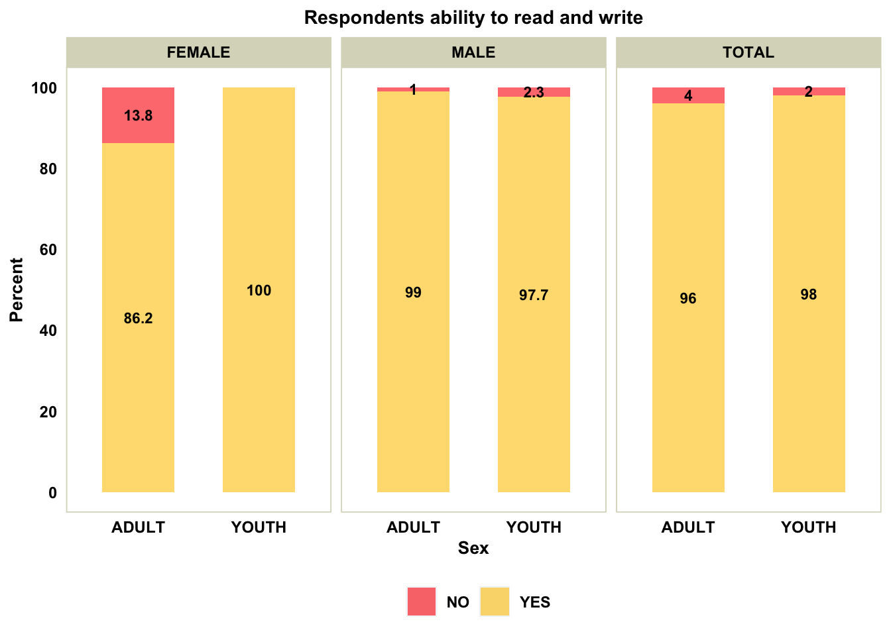
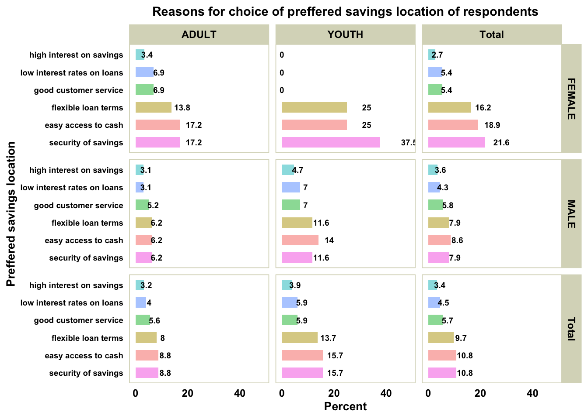
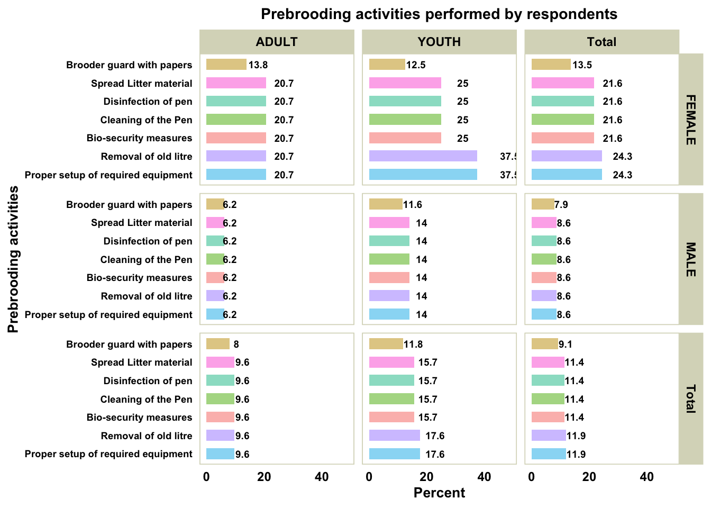

Better Chicken for a Better Future - Baseline Survey Report
1.0 Introduction
Poultry is a widely consumed animal protein worldwide and also serves as a good source of income for smallholder farmers in rural and peri-urban areas in Ghana. In Ghana, poultry production is primarily done on both commercial and domestic basis by individual households. Commercial poultry production is divided into three categories: large-scale (over 50,000 birds), medium-scale (10,000 - 50,000 birds), and small-scale (less than 10,000 birds). This is principally carried out in various districts throughout the Ashanti, Greater Accra, Bono, and Ahafo regions.
The local and foreign input suppliers (i.e., producers of production inputs and raw materials like maize, soybean/soybean meal, and other suppliers of vaccines , medications etc.) and producers of chicken products for consumption makeup Ghana’s poultry value chain. From the farm gate to the end consumer, the poultry products generated by farmers are then sold through a variety of channels via middlemen including egg retailers and wholesalers, live bird merchants and processors. Other significant players in the chain include domestic input suppliers, such as hatcheries like Akate Farms Limited and Topman Farms Limited, which provide day-old chicks, veterinary service providers (both private and government institutions), feed processors (like Koudjis, Boris B, etc.), who either sell feed inputs or process them for sale ,financial service providers and extension agents who provide production support to poultry farmers.
Recent years have seen a rise in poultry imports and domestic production due to rising consumer demand for reasonably priced animal protein. However, because of the challenges associated with local production, Ghana substantially relies heavily on imported poultry meat. In 2010, Ghana imported 200 million dollars’ worth of chicken from Brazil, the United States, and the European Union and still continues to import poultry till date . As a result,almost 95% of the market for the sector has been taken over by imported frozen chicken, which further exacerbates the plight of Ghana’s poultry. Farmers are therefore unable to compete under such conditions since the price of the imported chicken undercuts that of the locally produced poultry.
Aside this production setback, the present poultry sector is confronted with a number of obstacles, including high production costs, a lack of or inadequate supply of quality locally available inputs such as feed, inefficiency, poor biosecurity, inadequate veterinary services and others.These challenges cumulatively make it difficult for local producers to be competitive in the market ,thus they are unable to achieve standard profits from their poultry business.
In view of the above mentioned challenges,Solidaridad West Africa in collaboration with seven partners including IGrowChicken, Hendrix Genetics, Schippers Export B.V, Transnational Agri Projects, Nutreco Africa and AgriDEPOT is implementing The Better Chicken for a Better Future which is a pilot poultry initiative/project that intends to, by 2024, up-scale current poultry businesses, create jobs, and raise revenue for Ghanaian poultry farmers by developing a more progressive, inclusive, and integrated chicken meat value chain. The ultimate aim of the project is to provide smallholder poultry farmers the opportunity to grow their poultry business by providing access to quality input, and hands-on training.
The project is being executed in selected parts of the Ashanti region. These areas were chosen due to their proximity to the Bekwai and Atwima Kwanwoma districts, which are the locations of the breeder farm, hatchery, and feed mill/training centre (all of which are being built by AgriDepot as part of the better chicken initiative). This was designed to make it ease the transport of the day-old chicks and other supplies to the farms. Solidaridad made use of the database of smallholder farmers and their communities compiled by the Animal Production Departments in the Ministry of Food and Agriculture (MoFA) offices from these districts. Livestock Production Department. Sensitization of the community and farmers was done , and information on those who expressed interest was captured for agriDEPOT to follow up on using an established criteria. This criteria was applied by agriDEPOT during technical farm inspections of interested farmers.
To effectively set and track achievable Length of Project (LOP) targets, The Planning, Monitoring, Evaluation, and Learning unit of Solidaridad West Africa (SWA) commissioned a baseline study to assess the status quo of the core project outcome indicators for effective target setting and results-based delivery of the project’s interventions.
This report details the results from the quantitative baseline survey conducted from the 5th of December 2022 to 15th December 2022 and provides a fair overview of the farmers’ socioeconomic characteristics, current state of poultry production, challenges associated with poultry production as well as access to infrastructure in the selected districts.
2.0 Methodology
2.1 Sampling technique
The survey involved a census of 180 listed poultry farmers in six purposively selected districts in the Ashanti region namely; Amansie West, Amansie Central, Atwima Kwanwoma, Atwima Nwabiagya North, Bosomtwe and Bekwai .This list comprised of all poultry farmers who had shown interest in participating in the project after being sensitised and also met the criteria developed by Agridepot,a key project partner.
However,due to dynamics in the various districts including unavailability of respondents and disinterest due to delayed timelines, 161 of the listed farmers were interviewed. Additionally,15 non-listed farmers who expressed interest in the course of the survey were also interviewed. Overall, a total of 176 respondents were interviewed from the various districts for this assessment.
The data collection tool was uploaded on the Kobo Collect Platform, to collect data from the poultry farmers. This tool had both quantitative and open-ended questions for gathering valid, reliable, representative, explainable, and cumulative responses while allowing respondents to have flexible and close interaction with the interviewers.
A thorough four-day training program was held from December 1st to December 4th in 2022 prior to the baseline survey.Enumerators were taught how to use the IGrowChicken app to help selected farmers keep accurate records.Enumerators were also given training on research ethics, particularly with regard to informed consent, voluntary participation, and confidentiality. On the first two days, time was also devoted to reviewing the questionnaire and translating the questions into the local dialect.Pretest exercises were then conducted on the last two days of the four-day training program.Ten (10) poultry producers in the Bekwai district participated in the first pretest session. For the second pretest exercise, the enumerators were divided into two teams and given the task of interviewing poultry farmers in the Atwima Kwanwoma and Atwima Nwabiagya North districts, respectively.
2.2 Data Collection
The data collection tool was uploaded on the Kobo Collect Platform, to collect data from the poultry farmers. This tool had both quantitative and open-ended questions for gathering valid, reliable, representative, explainable, and cumulative responses while allowing respondents to have flexible and close interaction with the interviewers.
A thorough four-day training program was held from December 1st to December 4th in 2022 prior to the baseline survey.Enumerators were taught how to use the IGrowChicken app to help selected farmers keep accurate records.Enumerators were also given training on research ethics, particularly with regard to informed consent, voluntary participation, and confidentiality. On the first two days, time was also devoted to reviewing the questionnaire and translating the questions into the local dialect.Pretest exercises were then conducted on the last two days of the four-day training program.Ten (10) poultry producers in the Bekwai district participated in the first pretest session. For the second pretest exercise, the enumerators were divided into two teams and given the task of interviewing poultry farmers in the Atwima Kwanwoma and Atwima Nwabiagya North districts, respectively.
The pre-testing and training made it possible to review the data collection tools further, confirm their accuracy, and gauge the responses and/or comprehension of the questions from the respondents point of view.
2.3 Data Analysis
The R software was used to clean and analyse the quantitative datasets. The analysis includes descriptive statistics including frequencies, counts, scores, percentages, arithmetic means, and cross-tabulations of the variables assessed.
3.0 Results and Discussions
3.1 Distribution of poultry farmers reached
3.2 Distribution of poultry farmers reached
3.3 Age distribution of farmers
3.4a Breakdown of farmer’s educational levels
3.4b Distribution of farmer’s literacy levels

3.5 Main income sources of respondents
3.6 Beneficiaries experience in poultry production
3.7 Current production level and production capacity
| District | Sex | No. of Respondents | Total Stock Level (Birds) | Average Stock Level (Birds) |
|---|---|---|---|---|
| AM CENTRAL | FEMALE | 8 | 10000 | 1250 |
| AM CENTRAL | MALE | 32 | 3025 | 95 |
| AM CENTRAL | TOTAL | 40 | 13025 | 326 |
| AM WEST | FEMALE | 5 | 633 | 127 |
| AM WEST | MALE | 18 | 7000 | 389 |
| AM WEST | TOTAL | 23 | 7633 | 332 |
| BEKWAI | FEMALE | 10 | 2040 | 204 |
| BEKWAI | MALE | 27 | 5491 | 203 |
| BEKWAI | TOTAL | 37 | 7531 | 204 |
| BOSOMTWE | FEMALE | 1 | 292 | 292 |
| BOSOMTWE | MALE | 16 | 13271 | 829 |
| BOSOMTWE | TOTAL | 17 | 13563 | 798 |
| KWANWOMA | FEMALE | 4 | 6740 | 1685 |
| KWANWOMA | MALE | 22 | 15429 | 701 |
| KWANWOMA | TOTAL | 26 | 22169 | 853 |
| NWABIAGYA | FEMALE | 9 | 15600 | 1733 |
| NWABIAGYA | MALE | 24 | 40700 | 1696 |
| NWABIAGYA | TOTAL | 33 | 56300 | 1706 |
| TOTAL | FEMALE | 37 | 35305 | 954 |
| TOTAL | MALE | 139 | 84916 | 611 |
| TOTAL | TOTAL | 176 | 120221 | 683 |
| District | Total Stock Level (Birds) | No. of Broilers | No. of Layers | No. of Cockerels |
|---|---|---|---|---|
| AM CENTRAL | 13025 | 950 | 11095 | 980 |
| AM WEST | 7633 | 1310 | 5353 | 470 |
| BEKWAI | 7531 | 1586 | 4190 | 1755 |
| BOSOMTWE | 13563 | 1973 | 11390 | 200 |
| KWANWOMA | 22169 | 2349 | 19520 | 300 |
| NWABIAGYA | 56300 | 7600 | 48130 | 570 |
| TOTAL | 120221 | 15768 | 99678 | 4275 |
3.8 Access to finance (savings & loans history)
3.9 Most valued savings location
3.10 Reason for choice the preferred savings location

3.11 Previous experience with insurance
2.0 Poultry Farmers’ Access to Infrastructure
2.1 Access to Feedmills
Generally ,over 50% of the poultry farmers interviewed indicated they had access to feedmills.From the graph below,it is evident that poultry farmers in the Amansie Central district have the least level of access to feedmills whilst farmers in the Atwima Nwabiagya district have the highest level of access to feedmills.
2.2 Access to hatcheries
92% of the poultry farmers interviewed indicated they did not have access or utilize the services of hatcheries .Further probing during interviews revealed that most of the farmers prefer to purchase day old chicks from both within the country and from Nigeria.Also, majority of the farmers stated a preference for the production of broilers because of the shorter turnover period as compared to that of layers and so do not have eggs to even utilize the services of hatcheries.
2.3 Access to slaughterhouse
The graph below indicates that all the farmers interviewed do not have access to slaughterhouses.The respondents indicated that there are not slaughterhouses specially designated for poultry and also they usually sell the birds alive to market women and traders.Thus,it is only on very rare occasions that they require the services of a slaughterhouse.
3.0 Previous trainings received
3.1 Farmers who have received training on financial literacy
More than half of the respondents interviewed have received some form of training on financial literacy as indicated in the graph below.Comparatively, women seem to have benefited slightly more than the men from this training
3.2 Sources of training on financial literacy
Majority of the respondents indicated that they had received their training on financial literacy from Solidaridad.Other notable institutions that have provide such training to farmers in the selected districts are SSNIT, Nyonkopa, Atwima Kwanwoma rural bank, opportunity bank among others
3.3 Farmers who have received training on agribusiness management
Generally, majority of the respondents representing 76% of the sample have not received any form of training on Agribusiness management .
3.4 Sources of training on agribusiness management
3.5 Farmers who have received training on poultry husbandry
Out of the total sample, only 36.36% of the respondents indicated that they have received some form of training on poultry husbandry in the past.This represents a gap considering the fact that these farmers are into poultry production and need the requisite skills and knowledge in order to manage their poultry business well.
3.6 Sources of training on poultry husbandry
3.7 Adoption of pre-brooding practices
